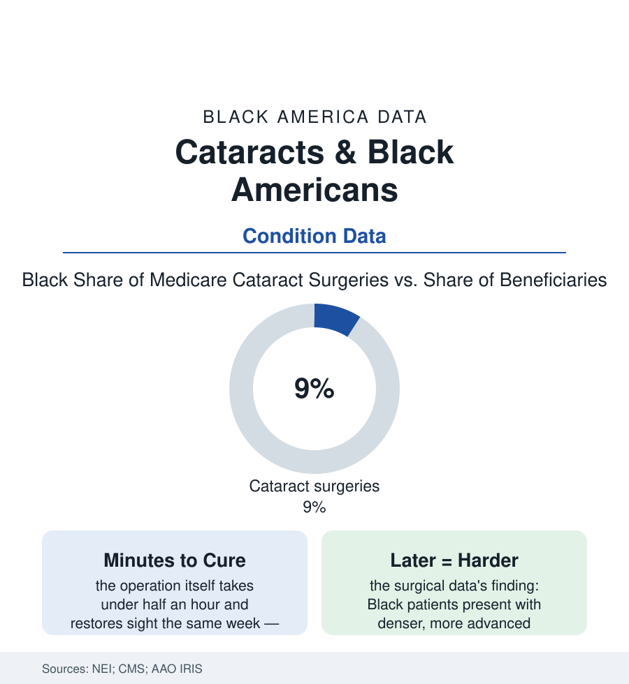

Black Public Health
Cataracts: The Curable Blindness That Waits Longer in Black Eyes
Cataract surgery is among medicine's most successful procedures — and Black Americans receive it later and less, carrying more avoidable vision loss in the Medicare data.

There is no blindness in medicine more curable than the cataract's: a clouded lens, a procedure measured in minutes, sight restored — the operation performed more than any other in the Medicare program. And its distribution carries this section's signature in miniature: Black Americans develop cataracts at comparable or higher rates in the National Eye Institute's data, lose more vision to them, and receive the surgery at lower rates and later stages in the Medicare and registry analyses. This article reads the eye file's second chapter.
The Road to the Operating Room
The cataract's pathway is a relay of small gates the data let us time: the eye exam that finds it (the vision-care utilization file — Black adults' lower rates of annual eye exams in the survey data, the eye doctor missing from the usual-source-of-care map of the insurance file), the diagnosis-to-referral leg (the optometrist-to-surgeon pipeline — the IRIS Registry's analyses tracing who gets referred on), and the surgical scheduling itself (the Medicare studies finding Black beneficiaries' cataract surgery rates running materially below white beneficiaries' in region after region — a gap that persists, in the better analyses, after the prevalence and the insurance are accounted). The presentation data mark where the delay ends: the advanced-lens rows (the dense, white, hypermature cataracts — the lens left until it is a stone — appearing at higher rates among Black patients in the surgical series, converting the routine operation into the complex one: more ultrasound energy, more complication surface, more second procedures, and a visual ceiling set by the years the retina spent in the dark and the glaucoma and diabetic damage that advanced unobserved behind the cloud). The bilateral file adds the quiet multiplier: the second eye — the operation on the other lens, whose completion rates by race in the Medicare data show the first eye's experience deciding the second, the patients lost between eyes carrying a one-eyed cure through the years the data count.
The workforce behind the slit lamp is its own line in the table: ophthalmology's Black share runs in the low single digits in the specialty data — among the smallest benches in the medical-student article's pipeline census — with the National Medical Association's ophthalmology section and the Rabb-Venable excellence-in-ophthalmology tradition (named for two Black pioneers of the specialty) carrying the mentorship line the numbers require. The access literature is blunt about the compound: the patient least likely to have an eye doctor is least likely to meet one who shares her background, in the specialty where the trust conversation happens inches from the face.
What the Vision Costs While It Waits
The consequence ledger is measured in the gerontology data: vision loss as a fall and fracture multiplier (the hip-fracture file's upstream), the driving file's end (the license surrendered or the night driving stopped — the transportation dependence of the car-access file arriving by ophthalmology), the reading and medication-management errors of the low-vision elderly (the insulin misread, the label guessed — the pharmacy file's home chapter), the depression and isolation associations of the acquired-blindness literature, and the employment rows for the working-age (the cataract at fifty-five in the uninsured pre-Medicare years — the coverage-gap file's vision chapter, the surgery deferred to the sixty-fifth birthday in the claims data's visible spike). The counter-evidence is, as usual, instructive: the VA's eye-care data (the integrated system's cataract rates running nearer parity in the published analyses — the gates internal, the cost removed), the screening-program evaluations (the community eye-screening models in the Black churches and senior centers of the intervention literature — detection achieved at scale wherever the exam is brought to the block, the failure being the bringing, not the finding), and the technology frontier's warning (the premium lens and laser upgrades the surgeons upsell at the surgical consult — the Medicare data showing the upgrade market sorting by income, the standard cure equal and the deluxe cure tiered: the file's next table being written at the surgery scheduler's desk today).
Reading the Cataract Data
A twenty-minute cure for the world's commonest blindness, arriving later and less often to the eyes that need it most: the cataract file needs no villain and no breakthrough — only an exam, a referral, and a scheduled morning, three small doors the data show opening at different speeds. The National Eye Institute publishes the prevalence. Medicare publishes the operations. The distance between the two tables is measured in years of other people's sight.
More in Black Public Health
Hypertension Among Black Adults: Prevalence, Control, and Consequences
About 55 percent of Black adults have hypertension — the highest rate of any U.S. group. Prevalence, onset, control, and the stroke, heart, and kidney consequences in the data.
Diabetes Among Black Adults: Prevalence and Complications
Nearly one in five Black adults has diabetes, diagnosed or undiagnosed — and its complications fall with particular weight. The CDC data on prevalence, control, and outcomes.
Black Life Expectancy: The Gap at Birth and Its Causes
Black life expectancy at birth is about 73 years, roughly five years below the national figure — the summary measure of every health gap in this section. The CDC data.
Source: National Eye Institute; Centers for Medicare & Medicaid Services procedure data; American Academy of Ophthalmology IRIS Registry; JAMA Ophthalmology studies.